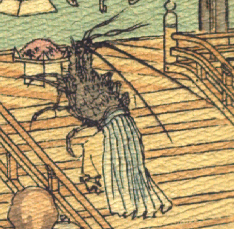

海老の化物。腰から下に黄色の袴と白い裳を着けて、女官のような装束をしている。一番前の脚で食べ物を持った三方を捧げ持ち、階を上っている。
著作者：J. Dautremer／出典：親書誌：U426_nichibunken_0108：Le Prince Feu-Brillant et le Prince Feu-Luisant／日付：2006／資源識別子：U426_nichibunken_0108_0001_0004
Copyright (c)2010- International Research Center for Japanese Studies, Kyoto, Japan. All rights reserved.